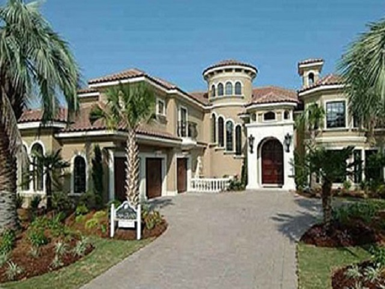

Other Interests?
I have a specialty in Home Building as one of the founders of Flint Custom Homes, having 16 years of construction experience and expertise in the building field. I use my insights and knowledge to escalate your construction website to the front page of user desktops.
As a business owner, I know what it takes for a business to succeed. With the right methods such as good organization, accounting, marketing, knowing your competion, goal orienting, great service-these things make the hallmark of a great company. I can help you achieve your goals.
The world is a wonderful soul and artistic creations is my joy. I use photography to capture the simplist yet captivating images. Nature can excite the masses with wonderous emotions. Sometimes it is the natural imagery that seizes the moment and gives your vision wings.